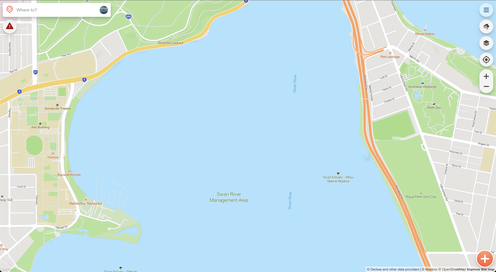
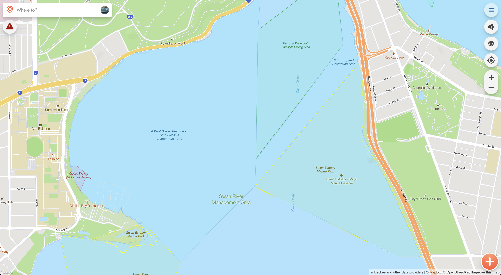
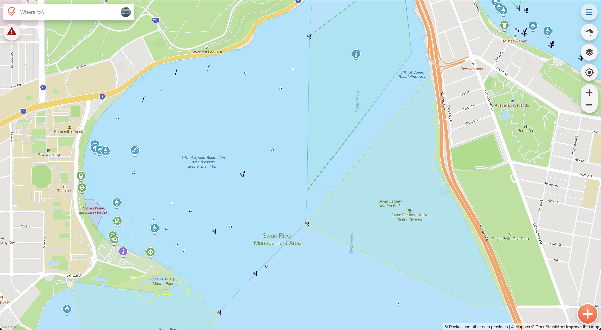
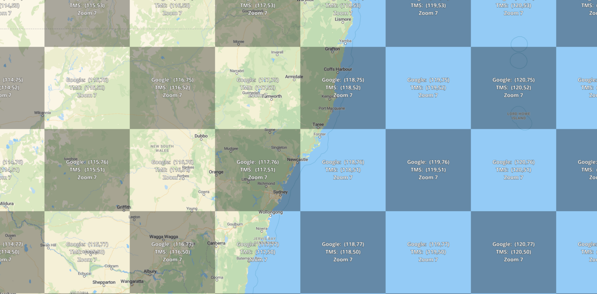
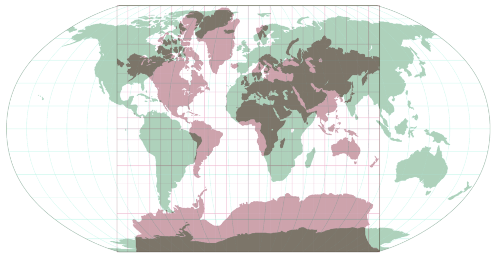

<!DOCTYPE html>
<html lang="en">
  <head>
    <meta charset="utf-8" />
    <meta name="viewport" content="width=device-width, initial-scale=1.0, maximum-scale=1.0, user-scalable=no" />

    <title>Dynamic Map Tile Generation at Scale</title>
    <link rel="shortcut icon" href="./favicon.ico" />
    <link rel="stylesheet" href="./dist/reset.css" />
    <link rel="stylesheet" href="./dist/reveal.css" />
    <link rel="stylesheet" href="./dist/theme/black.css" id="theme" />
    <link rel="stylesheet" href="./css/highlight/dark.css" />


  </head>
  <body>
    <div class="reveal">
      <div class="slides"><section  data-markdown><script type="text/template">


# Dynamic Map Tile Generation at Scale

Hunter Data Analytics 2022 - Jack McKew

* What are map tiles?
* Why use them?
* How to build and deliver them?

<aside class="notes"><p>Rough overview on what is covered in the talk, mention we&#39;ll go through a real world example</p>
</aside></script></section><section  data-markdown><script type="text/template">
## Quick Note

This talk is open source: <https://jackmckew.github.io/hunter-data-analytics-2022-dynamic-map-tile-generation/>

<aside class="notes"><p>Mention that the presentation is live on the web and hosted on github pages</p>
</aside></script></section><section  data-markdown><script type="text/template">
## Who am I

I'm Jack McKew, I'm a Snr software engineer at [Deckee](deckee.com/)

I absolutely love solving problems, especially to do with data! 📊

I have a blog on software, technology and more over at [jackmckew.dev](https://jackmckew.dev/)

You can reach me on:

* Twitter: [@jac_mcq](https://twitter.com/jac_mcq)
* LinkedIn: [jack-mckew](https://www.linkedin.com/in/jack-mckew/)
* GitHub: [@JackMcKew](https://github.com/JackMcKew)

<aside class="notes"><p>Reiterate that the talk is completely open source and links are all live</p>
</aside></script></section><section  data-markdown><script type="text/template">
## Projects I work on 👥 

I'm the creator & maintainer of open source packages such as:

* [Pandas_Alive](https://github.com/JackMcKew/pandas_alive)
* [awesome-python-bytes](https://github.com/JackMcKew/awesome-python-bytes)
* Numerous GitHub Actions:
    * [pyinstaller-action-windows](https://github.com/JackMcKew/pyinstaller-action-windows)
    * [pyinstaller-action-linux](https://github.com/JackMcKew/pyinstaller-action-linux)
    * [python-interrogate-check](https://github.com/JackMcKew/python-interrogate-check)

<aside class="notes"><p>Mention github actions are used in all of these projects and more. Pandas alive almost has 20k downloads off PyPI. Show pandas_alive readme page after slide.</p>
</aside></script></section><section  data-markdown><script type="text/template">
## Who's Deckee

[Deckee](deckee.com/) is the free boating app for local information, trip logging, weather, navigation aids and official alerts and notices


<aside class="notes"><p>Talk about job openings</p>
</aside></script></section><section  data-markdown><script type="text/template">
## What are map tiles?

<div class="r-stack">






</div>

<aside class="notes"><p>Deckee ingests data from over 100+ sources to produce these specific tiles</p>
</aside></script></section><section  data-markdown><script type="text/template">
## Why use map tiles?

Map tiles enable splitting up the world into smaller chunks.


</script></section><section  data-markdown><script type="text/template">
### So many tiles

<div class="r-stack">



</div>

</script></section><section  data-markdown><script type="text/template">### Projection hell

Robinson vs Mercator



<aside class="notes"><p>Mercator is used from sailing for constant true direction means that the straight line connecting any two points on the map is the same direction that a compass would show.</p>
</aside></script></section><section  data-markdown><script type="text/template">## Types of map tiles

* Raster

* Vector
</script></section><section  data-markdown><script type="text/template">
## Raster


</script></section><section  data-markdown><script type="text/template">
## Vector


</script></section><section  data-markdown><script type="text/template">## Why can't data stay the same 😡

Maps change every second of every day in some way, especially on the water

USCG publishes changes every day to their ~55,000 points spread across the Americas
</script></section><section  data-markdown><script type="text/template">## Tile servers

* Tegola
* T rex
* Raw files (tippecanoe)
* Map tiler
* Mapbox Tiling Service (MTS)

> Deckee uses Tegola
</script></section><section  data-markdown><script type="text/template">
## How Deckee builds tiles


</script></section><section  data-markdown><script type="text/template">## Cache management


</script></section><section  data-markdown><script type="text/template">
## Live Demo 😬
</script></section><section  data-markdown><script type="text/template">## That's all folks

Feel free to reach out to me on:

* My Blog: [jackmckew.dev](https://jackmckew.dev/)
* Twitter: [@jac_mcq](https://twitter.com/jac_mcq)
* LinkedIn: [jack-mckew](https://www.linkedin.com/in/jack-mckew/)
* GitHub: [@JackMcKew](https://github.com/JackMcKew)
</script></section></div>
    </div>

    <script src="./dist/reveal.js"></script>

    <script src="./plugin/markdown/markdown.js"></script>
    <script src="./plugin/highlight/highlight.js"></script>
    <script src="./plugin/zoom/zoom.js"></script>
    <script src="./plugin/notes/notes.js"></script>
    <script src="./plugin/math/math.js"></script>
    <script>
      function extend() {
        var target = {};
        for (var i = 0; i < arguments.length; i++) {
          var source = arguments[i];
          for (var key in source) {
            if (source.hasOwnProperty(key)) {
              target[key] = source[key];
            }
          }
        }
        return target;
      }

      // default options to init reveal.js
      var defaultOptions = {
        controls: true,
        progress: true,
        history: true,
        center: true,
        transition: 'default', // none/fade/slide/convex/concave/zoom
        plugins: [
          RevealMarkdown,
          RevealHighlight,
          RevealZoom,
          RevealNotes,
          RevealMath
        ]
      };

      // options from URL query string
      var queryOptions = Reveal().getQueryHash() || {};

      var options = extend(defaultOptions, {}, queryOptions);
    </script>


    <script>
      Reveal.initialize(options);
    </script>
  </body>
</html>
